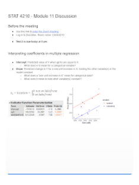

Tinker on projects with friends

Research shows that collaboration fosters a productive learning environment, simulates a real work environment, and encourages problem-solving growth. Here at Tinker, you can find like-minded individuals to pursue passion projects with, browse through inspiring works in all fields, and give feedback on projects that catch your eye. Try collaborating today!
Popular Projects
